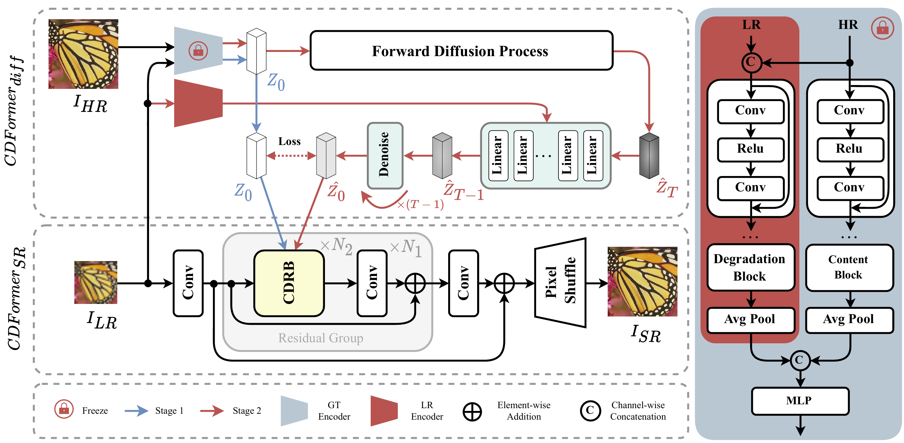
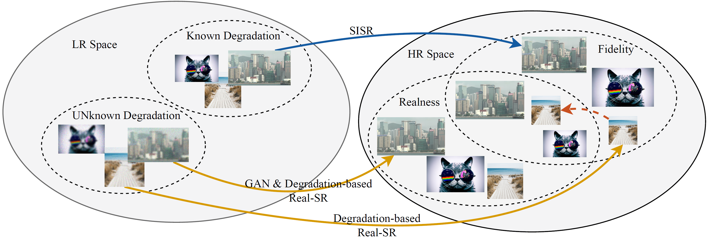
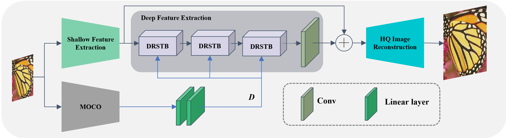

About Me
I am currently a PhD student in the School of Intelligent Science and Technology, Nanjing University, advised by prof. Kai Zhang. Previously, I received my master degree from Nanjing University of Aeronautics and Astronauticsin 2025, advised by prof. Pan Gao.Recently, my research interests have focused on camera pipeline and video restoration. Previously, I focused on image super-resolution.
News
- 2024.04 One paper accepted to CVPR 2024!
- 2024.03 One paper accepted to IEEE TMM!
Services
- Conference Reviewer: ACMMM, NeurIPS
- Journal Reviewer: TMM
Publication
-
CDFormer: When Degradation Prediction Embraces Diffusion Model for Blind Image Super-Resolution
-
Real-World Image Super-resolution via Diffusion Model: A Fidelity-Realness Tradeoff
-
Degradation-Aware Self-Attention Based Transformer for Blind Image Super-Resolution
Education
-
Nanjing University - Ph.D. in Computer Science and Technology
2025 - Present -
Nanjing University Of Aeronautics And Astronautics - M.S. in Computer Science and Technology
2022 - 2025 -
Henan University - B.E. in Network Engineering
2018 - 2022
Honors and Awards
- 2024.10, National Scholarship, Nanjing University Of Aeronautics And Astronautics
- 2024.10, Advanced scientific research Individual, Nanjing University Of Aeronautics And Astronautics
- 2022.07, Excellent Graduate of Henan University